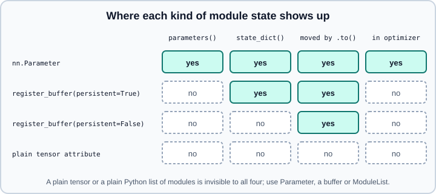

nn.Module: Parameters, Buffers, state_dict, Hooks, Containers & Init
|
This content was generated with the assistance of AI and should be verified against the official documentation before being relied on in production. |
Every layer, every loss with parameters and every model in PyTorch is a subclass of torch.nn.Module. A module is a Python object that owns state (parameters and buffers), owns other modules, and defines a computation in forward. The base class turns that structure into services: it finds all parameters for the optimizer, moves everything between devices and dtypes, switches training and evaluation behaviour, serializes the state, and lets you attach hooks. Understanding which attributes the base class tracks, and which it does not, explains most of the surprises people have with PyTorch models.
Examples were run on Python 3.13 with PyTorch 2.15 (CPU) on 2026-10-31. A first model is built in Neural Network Fundamentals; the next pages cover the layers (Linear, Convolution & Pooling, RNN, LSTM & GRU, Embeddings, Normalization, Dropout & Activations), and the training loop (Training Loop & Evaluation).
Writing a module
Subclass nn.Module, call super().__init__() first, create state and submodules in __init__, and compute in forward. Autograd derives the backward pass, so no backward method is needed. Call the module like a function, model(x), not model.forward(x): the call runs the registered hooks around forward.
import torch
import torch.nn as nn
class Net(nn.Module):
def __init__(self, d_in=4, d_hidden=8, d_out=2):
super().__init__()
self.fc1 = nn.Linear(d_in, d_hidden) # submodule
self.bn = nn.BatchNorm1d(d_hidden) # submodule with buffers
self.fc2 = nn.Linear(d_hidden, d_out)
self.scale = nn.Parameter(torch.ones(1)) # learnable tensor
self.register_buffer("steps", torch.zeros((), dtype=torch.long)) # saved
self.register_buffer("cache", torch.zeros(3), persistent=False) # not saved
def forward(self, x):
if self.training:
self.steps += 1
return self.fc2(torch.relu(self.bn(self.fc1(x)))) * self.scale
net = Net()
print([n for n, _ in net.named_parameters()])
# ['scale', 'fc1.weight', 'fc1.bias', 'bn.weight', 'bn.bias', 'fc2.weight', 'fc2.bias']
print([n for n, _ in net.named_buffers()])
# ['steps', 'cache', 'bn.running_mean', 'bn.running_var', 'bn.num_batches_tracked']
print(list(net.state_dict().keys())) # no 'cache': it is non-persistent
print(sum(p.numel() for p in net.parameters() if p.requires_grad)) # 75The official note’s own minimal example is a MyLinear module that stores two nn.Parameter tensors and returns (input @ self.weight) + self.bias.
What the base class tracks
Module.__setattr__ inspects every assignment. An nn.Parameter is registered as a parameter, an nn.Module as a submodule, and anything else is an ordinary attribute that the framework ignores. Buffers are registered explicitly with register_buffer(name, tensor, persistent=True).

-
Parameters: learnable tensors (
requires_grad=Trueby default).parameters()andnamed_parameters()return them recursively, including submodules; these are what you pass to an optimizer. -
Buffers: tensors that belong to the module’s state but are not learned, such as batch-norm running statistics, positional-encoding tables or masks. They move with the module (
to,cuda) and, if persistent, appear instate_dict(). A non-persistent buffer (persistent=False) is "left out of serialization" according to the note; use it for tensors that can be recomputed from the constructor arguments. -
Submodules: found by
children()(direct) andmodules()(recursive), withnamed_variants. -
Plain tensors and lists: a tensor assigned as
self.w = torch.randn(2)is not moved by.to(device), not saved and not trained; a plain Python list of layers is not registered, so its parameters are invisible to the optimizer. The executed snippet printed 0 parameters and an emptystate_dictfor a module with a plain list holding aLinear. UseModuleListorModuleDictinstead.
Source: https://docs.pytorch.org/docs/stable/notes/modules.html and https://docs.pytorch.org/docs/stable/generated/torch.nn.Module.html
Navigation helpers: net.get_submodule("fc1"), net.get_parameter("fc1.weight"), net.get_buffer("steps"), net.named_modules() and net.apply(fn) (which applies fn to every submodule recursively, handy for initialization).
train() and eval()
Modules start in training mode. train() and eval() set the boolean training on the module and all submodules; eval() is train(False). Dropout and batch normalization read it. The forward above updates self.steps only in training mode; the executed snippet showed the counter at 1 after a training-mode call and unchanged after an evaluation-mode call. The note says to keep modules in training mode while training and to switch to evaluation mode only for inference and evaluation. Evaluation mode does not disable autograd (see no_grad, inference_mode & Grad Modes).
Devices and dtypes
module.to(device) and module.to(dtype) convert all parameters and buffers in place and return the module. Built-in modules also accept device and dtype constructor arguments, so a large model can be created directly on the target device. By default parameters and floating-point buffers are float32 on the CPU, and the note recommends that custom modules follow that default. to(torch.float64) converts floating-point state only: in the executed snippet the integer steps buffer stayed torch.int64 while the weights became torch.float64. Create the optimizer after moving the module, because the optimizer holds references to the parameter objects. See Devices & Accelerators.
state_dict and load_state_dict
state_dict() returns an ordered mapping from dotted names to tensors: all parameters and all persistent buffers of the module tree. It is the recommended unit for saving and exchanging weights, because it does not depend on the Python class layout.
import io
buf = io.BytesIO()
torch.save(net.state_dict(), buf)
buf.seek(0)
sd = torch.load(buf, weights_only=True)
net2 = Net()
print(net2.load_state_dict(sd)) # <All keys matched successfully>Source: https://docs.pytorch.org/docs/stable/notes/modules.html and https://docs.pytorch.org/docs/stable/notes/serialization.html
torch.load uses weights_only=True by default since PyTorch 2.6, which refuses to unpickle arbitrary objects; saving, loading and the security details are in Saving & Loading Models.
load_state_dict(state_dict, strict=True, assign=False) copies values into existing tensors:
-
strict=True(the default) raisesRuntimeErrorif keys are missing or unexpected, or if shapes differ. The executed snippet printedError(s) in loading state_dict for Net:followed by the details. -
strict=Falsetolerates missing and unexpected keys and returns a named tuple withmissing_keysandunexpected_keys. In the snippet, removingfc2.biasand adding anextrakey gave['fc2.bias'] ['extra']. A shape mismatch still raises, even withstrict=False. -
assign=Truereplaces the module’s tensors with the ones in the state dict instead of copying into them. It is needed to load into a module on themetadevice (below), and the loaded tensors keep their own properties (therequires_gradflag of a parameter is the exception: it always comes from the module). The reference page advises creating the optimizer after anassign=Trueload.
Partial loading with strict=False is a common transfer-learning technique, but it can hide typos in key names; always print the returned missing_keys and unexpected_keys. When a checkpoint was saved from a wrapped model, keys carry a prefix (for example module. from DataParallel, DistributedDataParallel or torch.compile’s _orig_mod.); strip or add the prefix before loading.
Meta-device and lazy initialization
A module created on the meta device has shapes and dtypes but no storage, which makes it free to build even for models too large for memory. Materialize it either by loading real weights with assign=True or by allocating uninitialized storage with to_empty and then initializing.
meta = nn.Linear(2, 2, device="meta")
print(meta.weight.device) # meta
real = nn.Linear(2, 2).state_dict()
meta.load_state_dict(real, assign=True)
print(meta.weight.device, isinstance(meta.weight, nn.Parameter)) # cpu True
m = nn.Linear(2, 2, device="meta").to_empty(device="cpu") # uninitialized memory!
print(m.weight.device) # cpu; values are arbitrary until initializedSource: https://docs.pytorch.org/docs/stable/meta.html and https://docs.pytorch.org/docs/stable/generated/torch.nn.Module.html
After to_empty the parameters hold garbage, so call your initialization (reset_parameters() on built-in layers, or torch.nn.init) before use. Lazy modules infer input sizes on the first call: nn.LazyLinear(3) has an UninitializedParameter until it sees a batch, after which it becomes a regular Linear.
lz = nn.LazyLinear(3)
print(lz.weight) # <UninitializedParameter>
lz(torch.randn(2, 7))
print(lz) # Linear(in_features=7, out_features=3, bias=True)Run one dummy forward pass before creating the optimizer, so the parameters exist when the optimizer collects them.
Hooks
Hooks let you observe or modify a module’s behaviour without editing its code. Each register_* method returns a handle; call handle.remove() to detach it. The documented module hooks are:
-
register_forward_pre_hook(hook): called beforeforwardwith(module, args); it may return modified inputs. -
register_forward_hook(hook): called afterforwardwith(module, args, output); it may return a replacement output. Optionswith_kwargs=True(the hook also receives keyword arguments) andalways_call=Trueexist. -
register_full_backward_pre_hook(hook)andregister_full_backward_hook(hook): called with the gradients with respect to the module's outputs (grad_output) and inputs (grad_input). Prefer the "full" variants over the olderregister_backward_hook, which the reference page marks as deprecated in favour ofregister_full_backward_hookand warns will change behaviour in future versions. -
State-dict hooks:
register_state_dict_pre_hook,register_state_dict_post_hook,register_load_state_dict_post_hook(and a private pre-hook for loading) let you rename keys or migrate checkpoint formats. -
Global variants exist in
torch.nn.modules.module(for exampleregister_module_forward_hook) and apply to every module.
The note adds that all hooks allow the user to return an updated value that is used for the remaining computation.
lin = nn.Linear(3, 3)
def fwd_pre(mod, args):
print("pre", args[0].shape)
def fwd(mod, args, out):
print("post", out.shape)
return out * 2 # replaces the output
def bwd(mod, grad_input, grad_output):
print("bwd", [None if g is None else g.shape for g in grad_input], grad_output[0].shape)
handles = [
lin.register_forward_pre_hook(fwd_pre),
lin.register_forward_hook(fwd),
lin.register_full_backward_hook(bwd),
]
inp = torch.randn(2, 3, requires_grad=True)
lin(inp).sum().backward()
for h in handles:
h.remove()A frequent use is capturing intermediate activations for debugging, feature extraction or interpretability (see Interpretability & Explainability):
feats = {}
def save(name):
def hook(module, args, output):
feats[name] = output.detach() # detach: do not keep the graph alive
return hook
seq = nn.Sequential(nn.Linear(4, 6), nn.ReLU(), nn.Linear(6, 2))
for name, child in seq.named_children():
child.register_forward_hook(save(name))
seq(torch.randn(3, 4))
print({k: tuple(v.shape) for k, v in feats.items()}) # {'0': (3, 6), '1': (3, 6), '2': (3, 2)}Hook caveats: hooks do not run when you call module.forward(x) directly; backward hooks on a module whose inputs do not require gradients receive None for grad_input; hooks that keep tensors alive hold the graph in memory unless you detach; and hook behaviour is not part of an exported program, so test export separately (see torch.export).
Containers
-
nn.Sequential(*layers)chains modules in order; the output of one is the input of the next. The note stresses that it is limited to in-order chaining with a single input and output. Indexing (s[0],s[:2]),appendand anOrderedDictconstructor for named layers are supported. -
nn.ModuleListandnn.ModuleDictregister submodules held in a list or a dictionary; they have noforwardof their own, so you iterate over them yourself. -
nn.ParameterListandnn.ParameterDictdo the same for parameters.
from collections import OrderedDict
s = nn.Sequential(OrderedDict([("fc", nn.Linear(2, 2)), ("act", nn.Tanh())]))
print(s.fc, list(s.state_dict())) # Linear(...) ['fc.weight', 'fc.bias']
ml = nn.ModuleList([nn.Linear(2, 2) for _ in range(3)])
print(len(list(ml.parameters()))) # 6
md = nn.ModuleDict({"a": nn.Linear(2, 2), "b": nn.ReLU()})
print(list(md.state_dict())) # ['a.weight', 'a.bias']Source: https://docs.pytorch.org/docs/stable/notes/modules.html and https://docs.pytorch.org/docs/stable/generated/torch.nn.Sequential.html
Parametrizations (torch.nn.utils.parametrize, for example weight_norm) are covered by the official parametrizations tutorial listed in the references.
Initialization
Built-in layers initialize themselves in their constructor (reset_parameters). The default for nn.Linear is a Kaiming-uniform scheme with a gain chosen so that weights are uniform in \([-1/\sqrt{d_\text{in}}, 1/\sqrt{d_\text{in}}]\); a freshly constructed 100-input layer has a weight standard deviation of about 0.058, equal to \(0.1/\sqrt{3}\). To use a different scheme, call the functions in torch.nn.init, which operate in place on a tensor and run without recording gradients:
lin = nn.Linear(100, 50)
nn.init.xavier_uniform_(lin.weight)
nn.init.zeros_(lin.bias)
nn.init.kaiming_normal_(lin.weight, mode="fan_in", nonlinearity="relu")
print(round(lin.weight.std().item(), 3), round((2 / 100) ** 0.5, 3)) # 0.142 0.141
def init_weights(m):
if isinstance(m, nn.Linear):
nn.init.xavier_normal_(m.weight)
if m.bias is not None:
nn.init.zeros_(m.bias)
net.apply(init_weights) # applied recursively to every submodule
print(nn.init.calculate_gain("relu"), nn.init.calculate_gain("tanh")) # 1.414... 1.666...Source: https://docs.pytorch.org/docs/stable/nn.init.html and https://docs.pytorch.org/docs/stable/notes/modules.html
The functions are uniform_, normal_, constant_, ones_, zeros_, eye_, dirac_, xavier_uniform_, xavier_normal_, kaiming_uniform_, kaiming_normal_, trunc_normal_, orthogonal_ and sparse_, plus calculate_gain. Rules of thumb (the theory is in Training Deep Networks): Kaiming for ReLU-family activations, Xavier for tanh and sigmoid, orthogonal for recurrent weights, small values or zeros for the last layer in some residual designs.
To skip the default initialization of a layer that you will initialize yourself anyway, torch.nn.utils.skip_init(module_class, *args, **kwargs) constructs the module without running the default initialization, leaving its values unspecified until you initialize them:
m = torch.nn.utils.skip_init(nn.Linear, 5, 3)
nn.init.orthogonal_(m.weight)Source: https://docs.pytorch.org/docs/stable/notes/modules.html and https://docs.pytorch.org/docs/stable/generated/torch.nn.utils.skip_init.html
The note adds a caveat for your own modules: to be compatible with skip_init, a custom module must use torch.nn.init functions on its parameters and buffers inside the constructor and take device and dtype arguments.
Freezing and counting parameters
for p in net.fc1.parameters():
p.requires_grad_(False) # freeze one layer
total = sum(p.numel() for p in net.parameters())
trainable = sum(p.numel() for p in net.parameters() if p.requires_grad)
net.zero_grad(set_to_none=True) # clear gradients (the optimizer has the same method)parameters_to_vector and vector_to_parameters in torch.nn.utils flatten and restore all parameters for algorithms such as second-order methods. extra_repr customizes print(model).
Common pitfalls
-
Forgetting
super().__init__(): assigning a parameter or a module before it raises anAttributeError. -
Storing layers in a plain Python list or dict, or tensors as plain attributes, so they are not registered, trained, moved or saved.
-
Using a buffer for state that should be learned, or a parameter for state that should not (for example a mask), which changes the optimizer’s view and the checkpoint contents.
-
Creating the optimizer before
model.to(device)or before lazy parameters exist. -
Calling
model.forward(x)instead ofmodel(x), which skips hooks. -
Loading with
strict=Falseand not inspecting the result; a renamed layer then silently stays randomly initialized. -
Forgetting
model.eval()for validation, ormodel.train()after validation. -
Saving the whole module with
torch.save(model)instead of thestate_dict; the pickle depends on the class definition and is a security risk. -
Forgetting that
to_emptyleaves memory uninitialized.